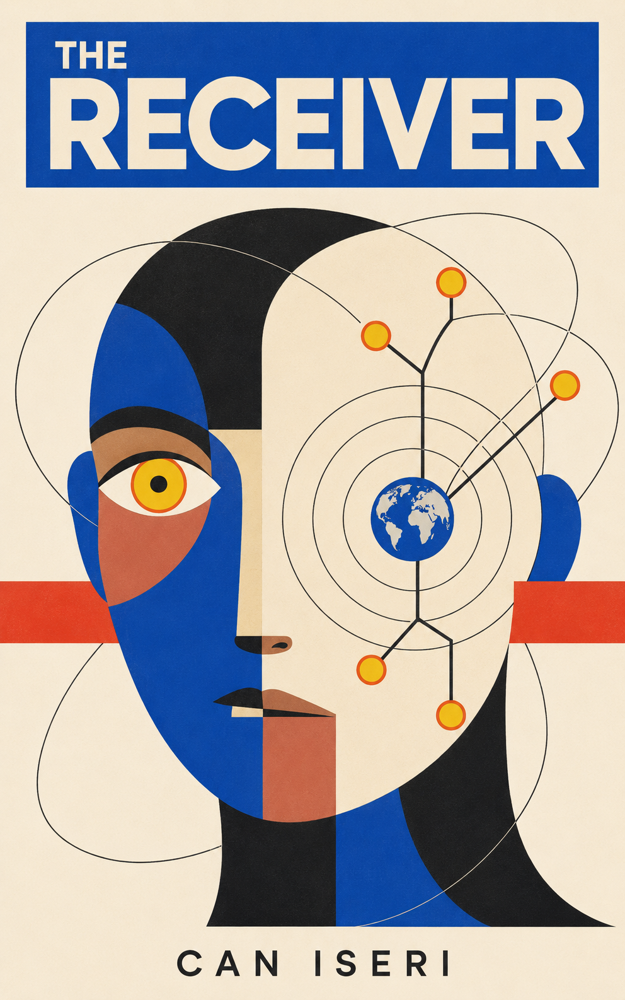
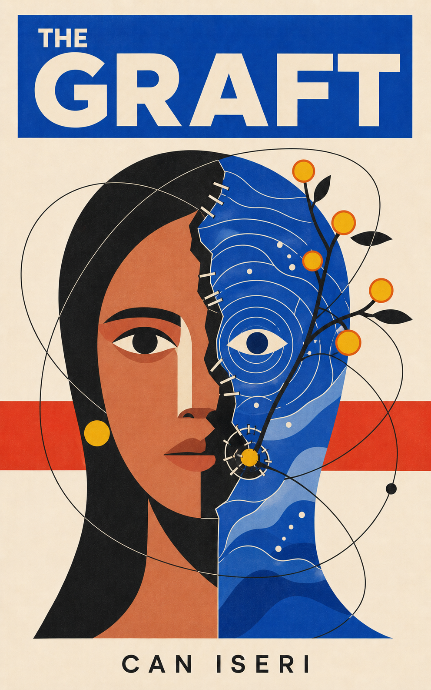

~35%
Faster controlled workflows
Reengineered selected validation, risk, and change-management paths across product, engineering, risk, and controls.
Technical product leader · Author · Endurance athlete
I lead technical product work in complex, regulated environments. I also write speculative fiction and train across running and cycling.
One discipline, expressed through systems, stories, and distance.
An edited view of leadership, fiction, endurance, and the person connecting them.
I currently lead technical product work inside a regulated enterprise environment. The work crosses product, engineering, analytics, risk, and control partners, with enough technical depth to make decisions real.
Turn high-stakes, difficult workflows into decisions people can understand, systems teams can operate, and outcomes the institution can trust.
Reengineered selected validation, risk, and change-management paths across product, engineering, risk, and controls.
Designed an automated performance-evaluation approach for complex analytical models.
Led API enhancements that expanded adoption across internal product and platform teams.
Figures are rounded and describe selected completed work. Institutions, platform names, teams, and control details are intentionally omitted.
Fiction is another way to examine systems: give an idea agency, pressure, and a cost, then watch what people choose.

When an evaluator discovers a frontier model translating concepts no human culture has ever named, she must decide what version of humanity to show whatever may be listening on the other side.
The Receiver is a story about first contact through machines. It asks whether authenticity, performance, and our capacity for repair can ever be separated.
Read on Amazon“Performance degrades authenticity. Repair improves compatibility.” The Receiver
Years after The Receiver, Nia finds herself carrying the memory of an ocean that is not her own. What returns through ORCHID tests the boundaries between consent, continuity, and the self.
The Graft is the second published story in The Orchard Hypothesis and continues the world and questions introduced in The Receiver.
Read on Amazon
A speculative sequence about civilizations, contact through machines, and the problem of translating one world to another. The Receiver opens the contact. The Graft continues it.
Authenticity · Intelligence as relationship · Repair over perfection
I train across marathon running, endurance mountain biking, and gravel. The terrain changes, but the practice remains the same: prepare patiently, read conditions honestly, recover, and return.
Marathon training and a long-term Six Star journey across the original six World Marathon Majors.
Endurance mountain biking shaped by the sustained effort and technical demands of Leadville.
Long-course gravel riding, including Big Sugar, across terrain that keeps changing the question.
Plan carefully, test honestly, adjust without drama, and come back to the work.
The page is intentionally selective. Enough to understand the work and the person, without turning a life into a database.
I am Can Iseri, a technical product leader, author, and endurance athlete based in New York. I work where complex systems, human decisions, and long horizons meet.
I care about clear premises, honest constraints, and work that can withstand contact with reality.
Writing and endurance give me two other ways to stay with difficult questions: one on the page, one in motion.
I am open to select conversations about senior technical product leadership, publishing, and ambitious ideas.